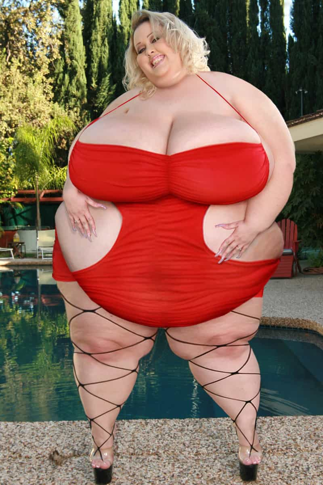
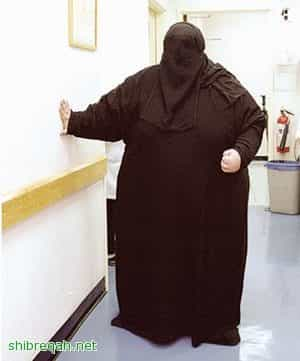
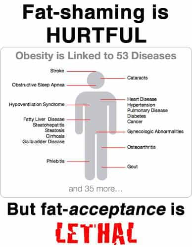

Today I was wandering through a Marshall’s to kill some time, because I can usually get cheap socks or T shirts. What I like about Marshall’s is that even though it’s full of cheap stuff, the type of people you encounter have a decidedly less “People of Wal-Mart” vibe than Ross or Burlington. But today my retinas were subjected to the type of abuse usually associated with staring at solar eclipses for hours on end, and I’m still shaken.
When I went to leave the store, I had to slow down because directly in front of me, taking up the entire width of the double exit doors, was a Giantess outfitted in yoga pants and a crop top. The curious side of me wondered about the square footage of material and what it was re-purposed from to make her pants, and it remains a mystery whether or not the crop top was intended to be worn as such or if the fit was a happy accident when she discovered that a quad X men’s Tee could only cover so much of her torso.
What really attracted my morbid fascination, however, was her triceps; like a parody of one of those horrifying Brazilian “bodybuilders” (a parody of a parody, then) that show up on the internet as cautionary tales with cartoonishly enlarged and disproportionate muscles inflated with site injections of synthol, her upper arms took no heed of the limitations her shirt sleeves theoretically enforced, instead choosing to swing freely several inches below her elbow.

This needs to stop. No longer should I have to fear for my sanity any time I venture into a public space, when around any bend I might witness a scene like the one described above. And for God’s sake, think of the children. Forget the fact that body types like this are becoming normalized and gaining mainstream acceptance; the real problem is the hypocrisy of a society that prevents kids under thirteen from seeing certain movies but turns a blind eye to grotesqueries once reserved for the circus. Becoming nauseated and losing one’s appetite certainly can’t be doing good things for the much maligned American diet, either.
In light of this epidemic, I have proposed a solution. First, stop calling it an epidemic, as though fatness is an airborne virus that strikes unsuspecting victims at random. Obesity is a choice, and while not everyone has the Adonis genetics your humble author was gifted with, neither are the DNA limitations so stacked against anyone that being in a healthy weight range is really all that difficult, let alone impossible.
The second part of my two stage solution is more difficult to implement but infinitely more gratifying: make fatties wear a Burqa. It’s well documented that Islam is a backwards religion that curtails the rights of millions of women, and the Hijab/Burqa is perhaps most symbolic of this. I propose we appropriate this piece of “culture” and use it to our advantage by outlawing it, except for those over a certain BMI.
This does two things; for one, it eliminates the damage inflicted on innocent bystanders when they see the obese in public, and secondly, it encourages them to lose weight. If you live in Texas and it’s July, wearing a few billowing yards of polyester just might make a person reconsider their life choices, and if they’re stubborn enough to carry on with their existing lifestyle they may still lose weight through sheer amount of perspiration.

I’m well aware that this proposal carries with it certain challenges, namely infringing upon a person’s rights. (There’s also the chance that Muslims will bulk up in order to blend in and smuggle IED’s, but no solution is perfect.) To that I ask, is a fatty really still a person, and do they merit the same rights as the rest of us?
If you’ve turned on the news at all recently, you’ll see plenty of people calling for gun control in a variety of forms and severity, and the argument they all make is the same: giving up freedoms is the price you pay for safety, or distilled to a basic aphorism, desperate times call for desperate measures. I for one cannot think of a more desperate situation than the obesity crisis.

It’s well documented that leftists have a much lower disgust threshold than those on the right, as well as usually being uglier. This isn’t propaganda (a quick Google search can supply you with the studies), and it makes sense. The left would have you believe that truth and beauty are social constructs, which is the type of philosophy that leads to retarded ideas like “fat acceptance”. Never mind the fact that obesity is demonstrably worse for your health than being in a healthy weight range, because facts don’t matter as much as feelings with these people.
The fact that I have to reiterate a self-evident fact that being fat isn’t good for you is hilarious to me, and a sign of how bad things have gotten. So to conclude, I’d like to stress that all these measures I’ve suggested come from a a place of empathy and kindness. The people that coddle the obese and rob them of their responsibility in the matter care not a whit for these people, and if they did they’d join me in shaming them. Perhaps with enough insults and enough time in a Burqa they’ll decide to make a change for the better. #Fatshame2k18 (it works).
Read More: The One Campaign That Will End Obesity Once And For All